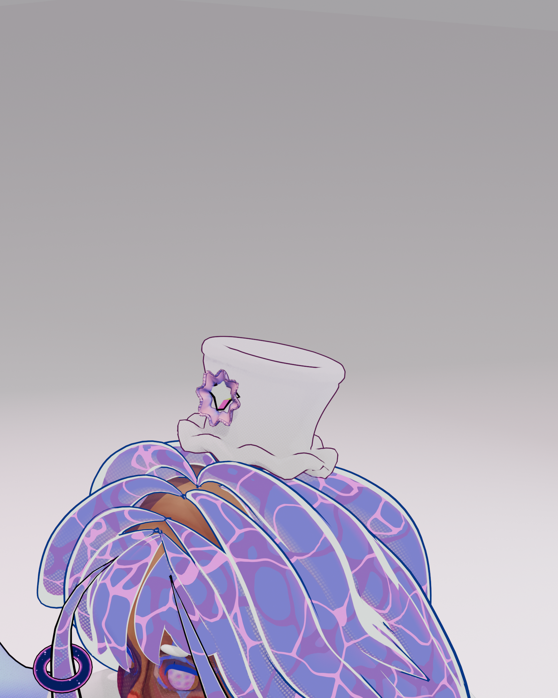

BP_BattleUI · OnKeyDown
D→RegisterLaneHit(0), F→(1), J→(2), K→(3). Compiles 0e/0w, saved 2026-08-06 23:45. Grade feedback calls SetJudgment(PERFECT/GREAT/GOOD/MISS) per hit.
Level Status — Gate Ledger 2026-08-07
All gates below recorded against the authoritative gate_ledger.json on 2026-08-07. PIE smoke passed. Battle encounter confirmed via melodia_smoke_encounter ActorTag. Blueprint graph reachability clean.
Character — Melusina
Melusina's material stack: 9-slot SK_Melusina with warm-violet diffuse ramp, WaterSplash/Sheet Niagara emitters with MPC proximity drive, nikki_subtle water hair preset with subtle_drip — all applied and verified gate session 2026-08-07. Sprint speed 714 uu/s, jump windup OR'd into bRuntimeIsInAir.


Rhythm Combat
Melodia's thesis: timing that lands well adds. Timing that doesn't is simply quieter. A player who can't read rhythm should finish the game and never know they were being timed. 4-lane highway (D/F/J/K), 192-note MIDI chart parsed at 128 BPM, grade feedback live.
D→RegisterLaneHit(0), F→(1), J→(2), K→(3). Compiles 0e/0w, saved 2026-08-06 23:45. Grade feedback calls SetJudgment(PERFECT/GREAT/GOOD/MISS) per hit.
192 notes, 64 beats, 128 BPM — parsed from the real MIDI file by UMelodiaMidiParser. Cadence Strike is the first rhythm-id. 8 skill ids defined: cadence_strike, resonant_arc, lullaby_mend, downbeat_break, dissonant_silence, tempo_shift, crescendo_wave, harmony_shield.
Direct-match path via ActorHasTag in MelodiaExternalJRPGBridgeSubsystem.cpp:83. Exactly 1 actor tagged in KaleidoNave. 0 UToolMenus remain in any runtime graph. gate: battle_encounter ✅
Dialogue — QuillScript
WBP_MelodiaQuillDialog renders in PIE — owner confirmed. Resonance shapes battle (Petal Cadence), dialogue (Quill choices that echo Sir's words), and exploration (place markers that resolve on arrival). One word, three contexts, zero extra systems.
Renders in PIE. Root cause of earlier regression was default 100×30 wrapper slots — now stretch-fill, offsets zeroed. 3 duplicate FiligreeDividers purged. SizeBox(52) ChoiceEntry rebuilt.
Travel allowlist: L_MelusinaMorning + L_Melodia_Dreamstate added. All 4 route ids present. Verified via independent re-export 2026-08-06.
Slot names unified: all writers and readers now use MelodiaJRPGSlot0. OnNewGameStarted chain reconnected, UToolMenus::Get purged. gate: save_system ✅